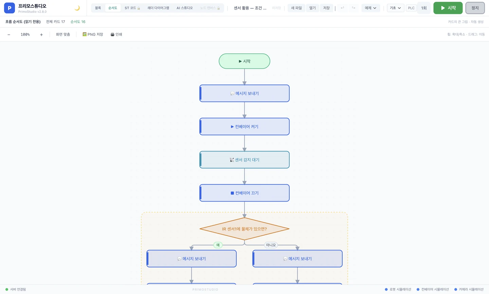

순서도로 보기¶
블록으로 만든 흐름을 순서도(플로차트) 로 자동 변환해 보여 줍니다. 블록이 "무엇을 하는지"를 보여 준다면, 순서도는 "전체가 어떤 모양인지"를 보여 줍니다.
무엇을 하는 단계인가요?¶
블록이 20장, 30장으로 늘어나면 화면을 위아래로 굴려야 해서 전체 그림이 한눈에 안 들어옵니다. 순서도 화면은 같은 흐름을 도형으로 한 장에 펼쳐, 반복이 어디서 돌아가는지 · 조건이 어디서 갈라지는지 · 병렬이 어디서 만나는지를 바로 보여 줍니다.
블록의 짝꿍 화면입니다
순서도는 자동으로 그려집니다. 블록을 고치면 순서도도 즉시 따라 바뀝니다. 순서도에서 직접 그리거나 고칠 수는 없습니다 — 흐름을 바꾸는 곳은 언제나 블록 화면입니다.
여는 방법¶
화면 위쪽 모드 탭에서 [순서도] 를 누릅니다.

| 탭 | 역할 |
|---|---|
| 블록 | 블록을 끌어 놓아 흐름 만들기 (편집) |
| 순서도 | 만든 흐름을 도형으로 보기 (읽기 전용) |
입문 단계부터 열려 있습니다
순서도는 학습 단계 1 (입문) 부터 바로 쓸 수 있습니다. ST 코드나 래더 다이어그램처럼 나중에 열리는 기능이 아닙니다.
도형 읽는 법¶
순서도의 도형은 국제적으로 통용되는 플로차트 기호를 따릅니다.
| 도형 | 의미 | 예시 블록 |
|---|---|---|
| ⬭ 둥근 캡슐 | 시작 / 끝 | 시작, 종료 |
| ▭ 사각형 | 동작 (무언가를 함) | 벨트 출발, 로봇 이동, 사진 찍기 |
| ◇ 마름모 | 판단 (참/거짓으로 갈라짐) | 만약 ~이면, AI 조건 분기 |
| ▭ + ⏱ | 입력 기다리기 | 버튼 입력 대기, 신호 기다리기 |
| ↺ 되돌이 화살표 | 반복 (위로 되돌아감) | 반복하기, ~하는 동안 |
| ╤ 갈래 바 | 병렬 나누기 | 동시에 하기 |
| ● 합류점 | 다시 하나로 모임 | 만약 끝, 동시에 끝 |
블록의 색은 순서도에서도 그대로 유지됩니다. 파란 벨트 블록은 순서도에서도 파랗게 나오므로, 두 화면을 오갈 때 눈이 헷갈리지 않습니다.
세 가지 제어 구조¶
수업에서 가장 설명하기 어려운 세 가지가 순서도에서는 그림으로 바로 보입니다.
반복¶
반복 블록은 되돌이 화살표로 그려집니다. 아래에서 위로 되돌아가는 선이 보이므로 "여기서 다시 위로 올라간다"를 말로 설명할 필요가 없습니다.
┌──────────────┐
│ 반복 3회 │◄──┐
└──────┬───────┘ │
▼ │
┌──────────────┐ │
│ 벨트 출발 │ │
└──────┬───────┘ │
▼ │
┌──────────────┐ │
│ 2초 기다리기 │───┘ ↺ 3회
└──────────────┘
조건 (만약 ~이면)¶
판단은 마름모로 그려지고, 참 갈래와 거짓 갈래가 좌우로 갈라진 뒤 다시 한 점으로 모입니다. "아니면(else) 쪽으로 가면 위쪽 블록은 실행되지 않는다"가 그림으로 설명됩니다.
┌────────────┐
│ 물체 있음? │
└─────┬──────┘
참 ◄───┴───► 거짓
▼ ▼
┌────────┐ ┌────────┐
│로봇 A로│ │로봇 B로│
└────┬───┘ └───┬────┘
└─────●────┘
병렬 (동시에 하기)¶
병렬 블록은 좌우 레인으로 나란히 그려지고, 각 레인에 "1번 작업 / 2번 작업" 머리표가 붙습니다. 순서대로 하는 것과 동시에 하는 것의 차이가 눈에 보입니다.
블록 화면과 이어서 쓰기¶
순서도는 보기만 하는 화면이 아니라, 블록 화면과 연결되어 있습니다.
-
도형 클릭 → 블록으로 이동
순서도의 도형을 클릭하면 블록 화면으로 넘어가면서 해당 블록에 파란 테두리가 표시됩니다. "이 마름모가 어느 블록이지?"를 찾아 헤맬 필요가 없습니다.
-
설정값 살짝 보기
판단 도형에 마우스를 올리면 어떤 조건인지, 어떤 값과 비교하는지가 작은 말풍선으로 나옵니다. 순서도를 떠나지 않고 확인할 수 있습니다.
-
실행 중 따라가기
흐름을 실행하면 지금 실행 중인 도형이 밝게 표시되며 순서도 위를 따라 내려갑니다. 학생이 "지금 어디를 하고 있는지"를 실시간으로 봅니다.
도구 모음¶
순서도 화면 위쪽에 있습니다.
| 버튼 | 기능 |
|---|---|
| ➖ / ➕ | 축소 / 확대 (Ctrl + - / Ctrl + +) |
| 1:1 | 원래 크기로 |
| 화면 맞춤 | 순서도 전체가 화면에 들어오게 |
| PNG로 저장 | 그림 파일로 저장 (학습지·보고서에 붙이기) |
| 인쇄 | 종이로 출력 |
수업 자료로 바로 씁니다
[PNG로 저장] 으로 순서도를 내려받아 학습지에 붙이면, 학생이 만든 흐름 그대로가 수업 자료가 됩니다. 모둠별 결과물 비교에도 좋습니다.
자주 발생하는 문제¶
순서도에서 블록을 옮기거나 지울 수 있나요?
할 수 없습니다. 순서도는 읽기 전용입니다. 흐름을 바꾸려면 [블록] 탭으로 돌아가서 수정하세요. 수정하면 순서도는 자동으로 다시 그려집니다.
순서도가 비어 있어요
블록 화면에 블록이 하나도 없는 상태입니다. 블록을 먼저 만든 뒤 [순서도] 탭을 누르세요.
순서도가 화면 밖으로 나가요
도구 모음의 [화면 맞춤] 을 누르면 전체가 한 화면에 들어옵니다. 블록이 아주 많으면 축소된 만큼 글씨가 작아지므로, 확대해서 부분씩 보는 편이 읽기 좋습니다.
SFC(시퀀셜 펑션 차트)와 같은 건가요?
다릅니다. 순서도는 지금 만든 흐름을 이해하기 쉽게 보여 주는 그림이고, SFC 는 그 자체로 프로그램을 작성하는 편집 언어입니다. 이 화면은 편집 기능이 없습니다.
강사 팁¶
블록 → 순서도 순서로 보여 주세요
먼저 학생이 블록으로 흐름을 완성하게 한 뒤 [순서도] 를 누르게 하면 "내가 만든 게 이런 모양이었구나" 하는 반응이 나옵니다. 순서도를 먼저 보여 주면 그리기 과제로 오해할 수 있습니다.
반복·조건 설명은 순서도에서
반복과 조건은 말로 설명하면 오래 걸립니다. 순서도의 되돌이 화살표와 갈라지는 선을 짚어 주는 편이 훨씬 빠릅니다.
실행하면서 함께 보기
[순서도] 탭을 열어 둔 채 흐름을 실행하면 밝아지는 도형이 순서대로 내려갑니다. 오작동을 찾을 때도 "어디까지 갔다가 멈췄는지"가 바로 보입니다.
다음 단계¶
- 같은 흐름을 산업 코드로 보기 → ST 코드 보기
- 조건과 반복을 더 익히기 → 변수 · 조건 · 반복
- 병렬 구조 이해하기 → 병렬 실행
이 페이지에 빠진 내용이나 잘못된 부분을 발견하시면 페이지 하단 📮 피드백 보내기 를 활용해 주세요.